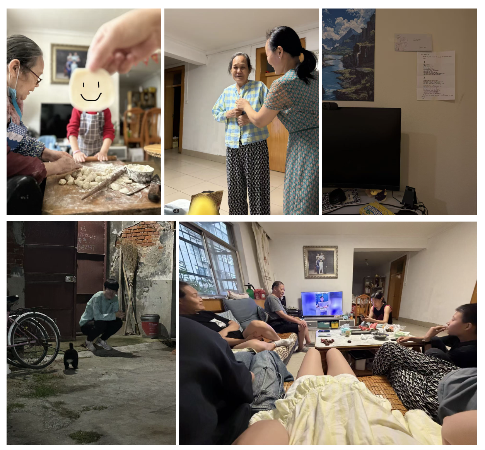
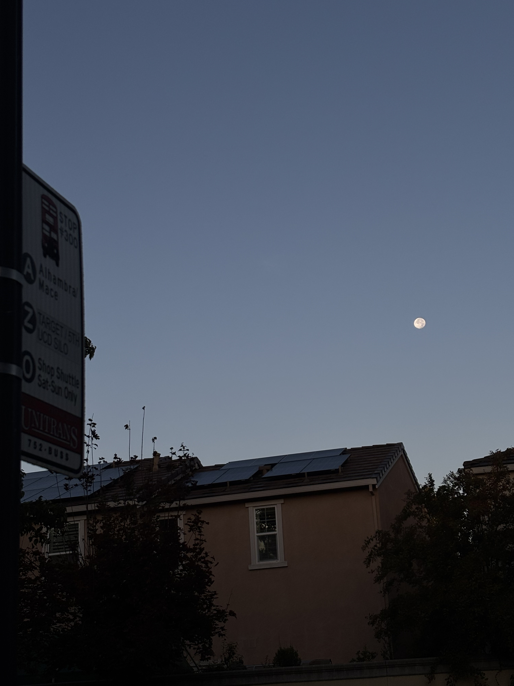
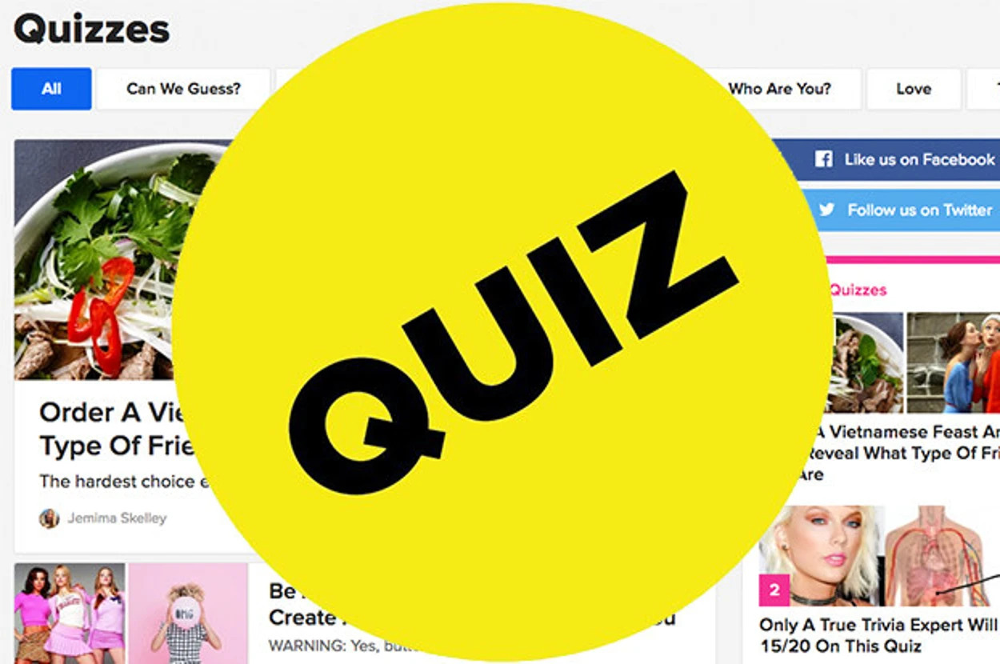

Learning Journal_
DES 157A | FALL 2026
Visual Thinking: Close Reading Images
Part One: Yilin Chen's Images

To me, the images are about home and moments of daily life. It is as if I am taking a glimpse of different moments of her life through her eyes.
The most interesting aspect is the photo of her family sitting together, where there is also a family photo in the background. It creates a quiet layer of past and present in the same space. Another interesting thing is how all of the images are taken from a first-person point of view.
The most obvious part of the images is that these are family members at home doing ordinary things. The mysterious part is the desk photo, where there are no people at all, just a note pinned to the wall. What is the meaning behind that photo? Another mysterious thing is how the photographer is almost invisible; we know she is there, but we do not know where she fits in this family. My suggestion to make them less documentary and more expressive is to keep pushing the first-person point of view so it feels like a memory seen through the photographer's eyes.
Part Two: The Z Bus Line

What makes this image interesting is that it was taken in the morning, but since the moon is out, it looks like it was taken at night. This image relates to my collection because I plan to make a collection of images about the Z bus line. I have taken the Z bus almost daily for three years, so the Z bus means something to me. This moment in the image is one interesting thing I saw while waiting for the bus that morning. My collection tells a story about me because, for all my years at Davis, the Z bus has been my main bus line to get home and get to school. I have had a lot of memories on the Z bus, whether that is seeing friends on the bus, almost being late to class, or waiting for the train to pass, just a lot of moments. To make the images more compelling, I could photograph small details or small moments I found interesting on the bus.
Visual Thinking & Emotion Agency
Before reading the NYT article, I usually looked at an image just long enough to get the point of what it was trying to convey. Even when going to museums, I only look at the aesthetics and rarely try to dissect what an image actually means. The article uses Visual Thinking Strategies to dig deeper into images. The strategy comes down to three questions: What's going on in this picture? What do you see that makes you say that? What more can we find? Visual thinking expands our knowledge of the world and can help start conversations.
With that in mind, I explored the Emotion Agency website. The site opens with a loading counter, which felt like I was booting up a game and told me right away that this would be an interactive experience. Instead of static images, I was placed into a 3D world where I followed the journey of pink particles. As I scrolled, the particles responded to the paragraphs about what Emotion Agency is about. There are small details, like the particles beating like a heart to mimic emotion and the About page world being a 3D render of their studio. These are the kinds of details I wouldn't have noticed if I hadn't slowed down and asked the visual thinking questions.
The drawbacks come from the same ambition. There are so many heavy animations that the site could lag on older laptops or phones. And although it does a great job showing that the agency designs experiences, it takes a while to figure out what they actually do because you have to scroll through everything first. Still, it showed me how motion can express emotion and give a site a personality.
Best Practices for Modals / Overlays / Dialog Windows
This article talks about the best practices for modal windows. It starts off by saying how modals turned from a good UI solution into a dreaded pop-up that everyone hates. I feel like people find modals annoying because they are now mostly associated with ads. Ads want users to view them for as long as possible, so they intentionally make them really hard to exit. The best practices the article mentioned are:
- Giving users a way to exit: This can be a cancel or "x" button. I personally HATE the "x" button. Unless there is a border around it, users will have a hard time knowing its clickable area. Pop-up ads have also made the x annoyingly hard to click.
- Descriptive title: The title should tell users where they are. This matters because modals act like a new page without leaving the current one.
- Buttons: Buttons shouldn't make users wonder "am I cancelling the cancel?" I think websites make this intentionally confusing because they don't want users to cancel.
- Sizing & location: Modals shouldn't take up the whole screen and should sit in the upper half, because on mobile they may get lost if placed lower.
- Focus: Use a lightbox effect. This is super important because it helps users tell the modal apart from the main page.
- User initiated: No surprise pop-ups. Ads should definitely follow this.
The article also talked about mobile modals. I agree they should be avoided on mobile, since space is already limited. Overall, I think modals are great ways to get people's attention, but they've been misused for ads and annoying discount pop-ups when shopping.
Best Practices for Form Design
Forms are an essential part of the user experience and appear in many different ways, from logging into an app and signing up for an account to completing quizzes. That is why getting a form’s UX right is critical so that it is simple to understand and easy to fill in. The article “Best practices for form design” written by Salim Ansari provides 20 best practices to boost a form’s usability. This learning journal contains what I learned from the article and my thoughts on it.
Out of the 20 best practices, one of the most useful practices that designers may overlook is providing matching keyboards. It makes it so much easier for users to input forms and prevents users from entering incorrect characters. Another important practice is providing form feedback. Providing a successful submission feedback will prevent users from second guessing whether their form went through and can help prevent duplicate form submission. Providing negative feedback, such as error messages, immediately is also helpful. I feel like giving error feedback after the user has completed everything wastes their time and can make their experience frustrating.
Form Example

One form that I think demonstrates good form design is BuzzFeed quizzes. The forms are fun and easy to follow. There are pictures alongside each answer choice. Once you select an option, there is instant visual feedback with the non-selected choices blurred and the selected choice highlighted. When you are done, there is feedback with confetti letting you know you completed the quiz and an option to retake the quiz again.
Overall, a form might seem simple enough to design since it is just boxes and instructions, but there are small nuances that can make the user experience either more positive or negative. Keeping these small details in mind can help designers create forms that are not only functional but also accessible and more enjoyable for users to complete.